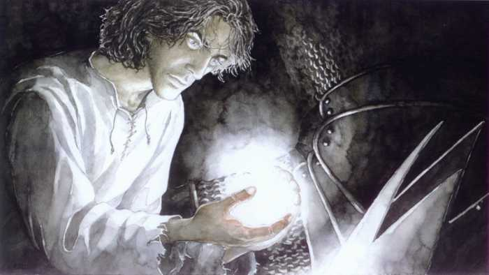

Forums galactiques > Taverne galactique : lieu de discussion informel > Coalitions??
Pages : 1 2
| Feänor  21/03 ETU 10:45 | Commandants, J'ai cherché dans les archives des discussions, j'ai pas trouvé de sujet qui regroupait les coalitions existantes dans cette galaxie... Aussi, je fais appel a tous les gérants des coalitions pour qu'ils viennent présenter leur coa aux jeunes commandants. Merci de votre compréhension Feänor, magnat de la galaxie... |
chux 21/03 ETU 13:59 | Une nouvelle coalition vient d'etre crée elle se nomme Les Grand maitres , elle rassemble quelques joueurs de SGP, mais ceci n'est pas un critere pour y entrer. Quand à la hierarchie, il y à un chef moi , et les autres sont mes vassaux :p . Je rigole, il y à un conseil et toute l'alliance participe à a peu pres tout :) Pour le moment nous ne sommes pas tres puissant, mais cela devrait vite changer. |
Bul-Kathos 21/03 ETU 17:13 | Comme dit le proverbe : "l'espoir fait vivre" |
Ios 21/03 ETU 17:31 | J'approuve l'expression de Bul, parce que le fais de jouer à plusieurs est inutil si vous ne savez pas jouer correctement. Une équipe performante se compose de : 1°) Joueurs expérimentés. 2°) Un leader et des exécutants. J'ai rien d'autre à ajouter. |
Spectror 21/03 ETU 17:38 | Une bonne équipe doit surtout être équilibrée sur tous les points. Jack. |
Feänor21/03 ETU 18:12 | Peut-on revenir au but premier de ce topic s'il vous plait? Et au lieu de critiquer, commandants, parlez nous de vos coalitions respectives... |
chux21/03 ETU 19:43 | ouais à mort , de recensement on passe à la critique je dis ce que j'ai à dire et basta viens sur sgp pour voir les noobs, tu pourra pleurer un peu |
Spectror21/03 ETU 19:53 | Disons que je ne fais pas parti d'une coalition. Jack. |
Néo-kaizer21/03 ETU 23:04 | Et quels sont les valeurs et objectifs de la coalition des grands maîtres ? Parce que jusqu'à présent la présentation est tout de même un peu faible, non ? |
chux22/03 ETU 06:43 | on dit pas tout pour le moment, ce serra la surprise :p dans peu de temp. |
lttiger 22/03 ETU 16:21 | CHARTE DE L'ORDRE NEBULAIRE PAIX ET MAINTIENT DE LA PAIX L'Ordre Nébulaire est dirigé par le Maître de l'Ordre et un Conseil de 5 membres élus par le Maître. CONSEIL DE L'ORDRE Il décide de la politique de l'Ordre et de la stratégie militaire. Il a pour mission de surveiller le comportement de ses membres et de radier un de ses membres en cas de nécessité. Il fait appliquer ces directives par l'Amiral Sa composition: Maître, 2 Conseillers, 2 Diplomates, 1 Amiral, Soldats, Pirates. MAÎTRES : Lttiger et son bras droit lm9. CONSEILLERS : Baccarax, ... AMIRAL : Dark Vador, DarkFleutin(commercant), ... DIPLOMATE : Lttiger SOLDATS: Angelius Liberty Toqilo Shura Chaaka Dowee II general proxilus PIRATES: en attente d'une proposition LES MEMBRES Ils auront libre choix de leurs attaques en respectant les alliés, indépendants et PNA. Ils devront aide et assistance aux membres de l’Ordre en difficulté. Leur courage au combat et leur activité au sein de l'alliance pourront leur permettre de progresser dans la hierarchie. LES GUERRES L'Ordre Nébulaire pourra déclarer la guerre selon les cas suivants : - Pas de solution Diplomatique - Abus de confiance avec attaques de membres de l'Ordre. - Attaques répétées ou volontairement destructrice de plusieurs membres de l'Ordre par un même empire. - Raids organisés sur un des membres de l’Ordre. PROJET MAX 50 - L'Ordre Nébulaire instaure sous 50 espaces(systèmes) une zone de sécurisation. - Toute attaque sur un empire Nébulaire sera prohibée, si le remboursement n'est pas effectué dans la journée, un raid punitif sera immédiatement organisé. - L'Ordre Nébulaire n'attaquera aucun empire de cette zone sauf grenier certifié par notre gardien du commerce. - Il y a libre circulation des alliances dans cette zone. - Les guerres entre alliance y seront autorisées. - Toute alliance ne respectant pas cette zone, verra ses empires chassés de celle-ci sans relache. - En dehors de cette zone l'Ordre Nébulaire est soumis aux lois de la galaxie (attaques et ripostes). [- Il est interdit a l'Ordre Nébulaire d'attaquer en dehors de cette zone et de venir s'y cacher, l'empire devra rester une journée pleine à l'extérieur des 50 espaces sous peine de radiation.] - Cette zone est le point de départ et de construction de nombreux indépendants : - Tout indépendant de moins de 20 jours (sauf grenier certifié) sera systématiquement sous protection Nébulaire afin de lui permettre un minimum de construction et sera considéré comme un empire Nébulaire. Si vous avez des questions, je me ferais une joie de vous répondre. Pour le recrutement contacter Dark Vador ou moi-même. Lttiger, selon les archives de l'Ordre Nébulaire, 2098. |
Lord Oblivion 22/03 ETU 19:20 | Pour les attardés mentaux, il y a un sujet dans l'AG qui traite ce sujet, alors laissez moi boire mon diabolo menthe en paix! |
scorpio 28/03 ETU 22:21 | bonjour bonjour les djeunes j'espere vous allez bien juste une petite intervention pour vous dire que la coalition Saï mina fait une petite campagne de recrutement!!(enfin moi plutot) Il y a environ 5places a promouvoir pour le moment n'hesitez pas tentez votre chance!!mdr Non je rigole on recherche environ 5commandants qui sont sympathiques euh..... qu'on aime bien...... qui parle pour rien dire!!........enfin bon des gens bien bien gentil et qui sont fort aussi |
eorl29/03 ETU 01:53 | La Eoel et associés recrute. Nous sommes une compagnie à buts commerciaux et recherchons des personnes de tout acabit pour augmenter nos capacités de commerce. Nous sommes et resteront neutres. Les avantages de cette coalition sont ceux-ci: -redistribution des profits aux membres de la coalition, -Programme d'aide aux jeunes commandants en conflits (aide diplomatique avant tout (on est pas des bètes), aide militaire en dernier recours) -Ambiance chaleureuse Envoyez moi une lettre de motivation afin que je vous envoie l'invit. |
chux29/03 ETU 21:08 | Ios à dit : "21/03 ETU 17:31 J'approuve l'expression de Bul, parce que le fais de jouer à plusieurs est inutil si vous ne savez pas jouer correctement. Une équipe performante se compose de : 1°) Joueurs expérimentés. 2°) Un leader et des exécutants. Je n'ai rien d'autre à ajouter. ". Bon des joueurs experimentés , tu n'a pas à avoir peur, viens sur sgp et tu verra qui sont les noob. ensuite leader et executants, on se connait un peu donc pas de probleme. et là je n'ai rien d'autre à ajouter. XD |
Ios29/03 ETU 21:28 | Tu parles pour qui là parce que tu reparts dans le hors sujet. |
Arioch Nemesis 29/03 ETU 21:56  | Bah, inutile de s'en soucier... Je compte sur vous pour lui passer le verbe. Si vous le souhaitez, je me charge du complément... Héhéhé |
Ios29/03 ETU 21:58 | HS : Mais trop bon sur ce coup Arioch, je suis explosé de rire ! Tu es vraiment un maître de la mise en boîte (c'est pas dur avec chux, il l'en ai déjà une). /HS |
Necromancien 29/03 ETU 21:58 | Si y a besoin, n'hésitez pas à me contacter mais bon vu la taille ca devrait pas être trop dur ... |
scorpio30/03 ETU 00:02 | "Désolé je ne comprends pas votre petit délire" Pour le commandant chux si tu parlais de la coalition Saï mina ne t'inquiète pas pour nous! Nous avons de bons fédérés (Eldrad, Périclès, alexandre, tito(mdr), moi^^) et aussi de bons marchands (Ios, Lena, Kwési et notre chef Asuryan) Nous manquons juste d'un alliantiste c'est pour cela j'espère que Spectror nous rejoindra bientôt ainsi que le commandant ManiA pour peaufiner notre petite équipe! |
Pages : 1 2
Forums galactiques > Taverne galactique : lieu de discussion informel > Coalitions??